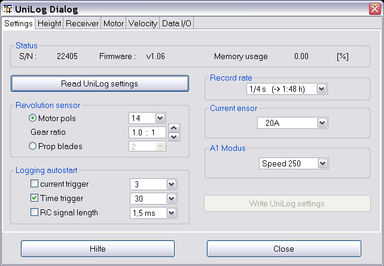
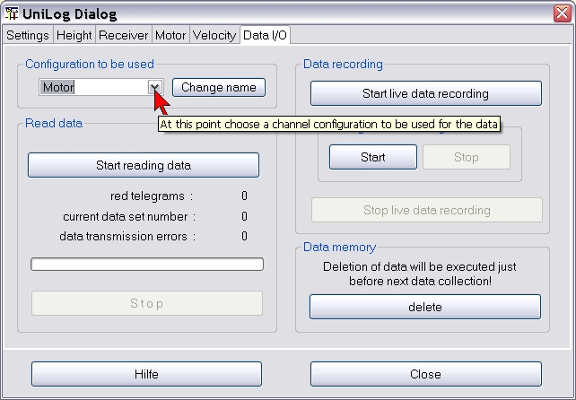
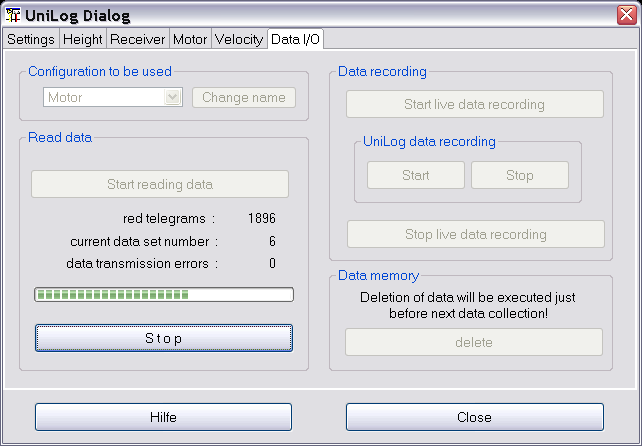
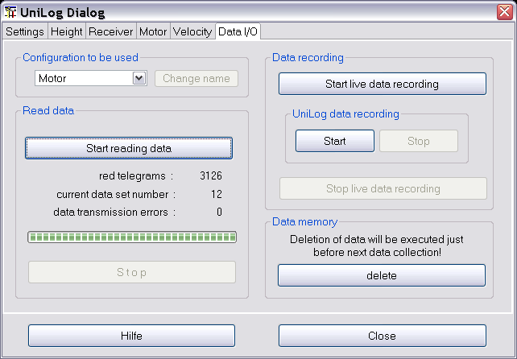
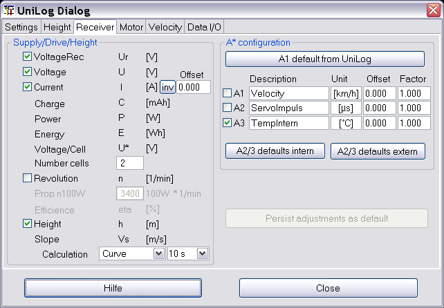

The UniLog device dialog is to be used to visualize and adjust of the UniLog "Settings". Using the last tabulator "Data I/O" the data store in the device can be read and visualized. To manipulate the visualization the four configuration tabs might be used. At this place everybody can create there own configuration with meaningful names. In initial, as recommendation, there are
Height, simple height measurement with low additional weight for the model plane
Receiver, additional to the height the receiver supply power can be measured to get reasonable values to estimate required power consumption for the voltage regulator
Motor, to measure the motor power and efficiency to dimension the motor controller or propeller
Velocity, influence of the prop to the flight velocity or simple get a feeling for the planes speed
Alternative the configurations can be adjusted to fit personal requirements or simply model names like Model_1 to Model_4.
A lot of hints are available by tool tips of the dialog itself and make this help nearly obsolete. The tool tips are visible by hovering the mouse over the fields of interest.
The actual implementation fits the firmware version 1.06.
Afterwards the serial communication is configured using the device selection dialog and the device dialog is opened it is possible to query the UniLog internal setting by pushing the button “Read UniLog settings”. Such a view with queried settings is shown in picture 1.

If settings are modified the button “”Write UniLog settings” gets activated. Pushing this buttons will write the modified settings data into the UniLog device.
Hint : It is meaningful to read at first UniLogs setting before modifying, otherwise some dialog defaults will be written into the device.
Initially all buttons are active to read log data from the UniLog. With selecting a specific configuration, tabs 2 to 5 will be explained next section, this selected configuration will be applied to the red data. But it is possible to switch data configurations later for each dataset individual.
Only the “delete” button is extra. Pushing this button the data are marked for deletion. The deletion gets active next time a log operation is started. The data stored within can still be read.

After pushing “Start reading data” all the data within the device the read operation starts immediatly and the selected configuration is applied.
Using the button “Start live data recording” a query cycle is initiated which reads according the device settings and connected sensors and the data are displayed in graphics, as digital and as analog displays. If the button “Start” within the UniLog data recording group is pushed the UniLog itself will log the data internal.
By pushing start* buttons as reaction the stop* buttons are getting activated.

At the end of the read operation the data are displayed. The dialog gets back to its initial state. Only the progress bar is filled and the number of red data telegrams are displayed.

The Data I/O Tabulator enables to modify the configuration names. To change a configuration name it is required to push at first the button “Change name” to activate the change mode. After editing the name the operation is committed by the enter button. The new name will be displayed in the tabulator changed and will made persistent in the device configuration file.
This complex tabulator is showing all device possible measurements. Only the real measurements representing a device sensor connection has a check box to enable activation. If a measurement gets activated the depended measurements are getting activated too. As sample the receiver configuration tab will be explained.

If the measurement “Height” will be selected the dependent measurement slope calculation with its two combo boxes gets activated.
For the slope calculation one of two regression types has to be selected as well a regression interval time between 1 and 20 seconds.
Each change will be immediate change the dataset visualization. A change will also activate the “Persist adjustments as default” button to make the configuration composition persistent and will be used next time data are gets applied to this configuration.
Special are the 3 analog connectors (A1 to A3). The A1 might be pre-configured using the device settings (Settings tab). This will adjust UniLog internal measurement adjustment. By pushing “A1 defaults from UniLog” this configuration will be red and the matching measure name will be updated in the A1 description field. If required for the connected sensor an offset as well as a factor can be used for adaption. A change will activate the “Persist adjustments as default” button to enable to persist the change for later repeated usage.
If a dataset is just displayed while opening the dialog the dialog tab with the matching configuration is displayed on top. Does the dataset displayed not match the configuration the configuration might be adapted or a better matching configuration selecting another tab can be selected. By doing this a message box pops up to commit or de-commit this operation.
Hint : If four configurations are to much it can be reduced. This requires to comment out channel configuration in UniLog.xml (<!-- XML comment -->). More then four configurations are possible but the current implementation does not support.
Of course it is possible to activate all measurements in the configuration tab and filter using the curve selector.